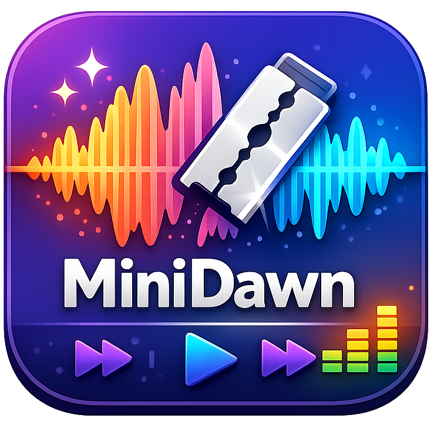

Công Cụ Tối Giản,
Hiệu Suất Tối Đa
MiniApp4All mang đến bộ sưu tập các tiện ích tinh gọn, công cụ AI tiên tiến, hỗ trợ phụ đề và phần mềm dịch thuật thời gian thực. Tất cả được thiết kế với triết lý: Tốc độ, Trực quan và Đề cao tính ứng dụng thực tế.
Truy Cập Nhanh

T2SPP AI Voice
Ứng dụng chuyển đổi văn bản thành giọng nói siêu tốc, dung lượng cực nhẹ, giao diện thân thiện và hoạt động 100% offline không cần Internet.
Xem Chi TiếtKho Ứng Dụng Nổi Bật
T2SPP
Chuyển đổi văn bản sang giọng nói (Text-to-Speech) hoàn toàn offline. Dung lượng nhẹ, hỗ trợ đa dạng giọng đọc với độ trễ cực thấp.
Mở Cài Đặt
Realtime Translator
Dịch thuật phụ đề và văn bản theo thời gian thực ngay trên màn hình. (Phần mềm đang trong giai đoạn phát triển và thử nghiệm).
Xem Cập Nhật
Mini Dawn
Giải pháp cắt ghép và tinh chỉnh âm thanh chuyên nghiệp, trực quan, hỗ trợ xử lý siêu tốc mọi định dạng âm thanh phổ biến.
Tải Trải NghiệmT2SPP > Hướng Dẫn Cài Đặt
Các bước thiết lập ban đầu
Để sử dụng, bạn vui lòng tải xuống tệp tin nén T2SPP.7z, sau đó giải nén ra một thư mục bất kỳ và chạy trực tiếp file T2SPP.exe. (Mọi thứ sẽ tự động cho bạn, không cần cài đặt rườm rà).
Khuyến nghị: Máy tính của bạn nên được cài đặt sẵn phần mềm giải nén WinRAR phiên bản mới nhất.
Tải Xuống Bản Cài Đặt (Setup)
T2SPP > Phiên Bản Mới Nhất
Bản cập nhật v1.2.0
Bản cập nhật này mang đến khả năng tối ưu hóa hiệu suất hơn nữa, tích hợp thêm tính năng nhận SRT và chuyển đổi sang giọng đọc và cải thiện giao diện người dùng.
Phiên bản hiện tại: v1.2.0
Tải Xuống Bản Cập Nhật
T2SPP > Cài Đặt Modules
Tích hợp thêm Modules giọng đọc
Để thêm các mẫu giọng đọc mới, vui lòng tải thư mục chứa Models và chép (copy) toàn bộ vào đường dẫn cài đặt của phần mềm theo cấu trúc sau:
C:/Tools/Text To Speech/models
Tải Xuống Kho Modules
T2SPP > Bản Quyền & Kích Hoạt
Hướng dẫn kích hoạt tài khoản Pro
Bản Pro mở khóa toàn bộ sức mạnh của T2SPP với các tính năng cao cấp: Multi Voices, SRT-Voices, Ebooks, Mobile_remote. Vui lòng xem hướng dẫn chi tiết bằng hình ảnh bên dưới.
Mở Hướng Dẫn Kích Hoạt (Có Hình Ảnh)
Realtime Translator > Cài Đặt
Đang phát triển
Đang phát triển.
Realtime Translator > Cập Nhật
Phiên Bản Thử Nghiệm (Experimental Build)
Đang phát triển.
Mini Dawn > Cài Đặt
Thiết lập Mini Dawn
Để sử dụng, bạn vui lòng tải xuống tệp tin nén Mini_Dawn_Setup.7z, sau đó giải nén ra một thư mục bất kỳ và chạy trực tiếp file Mini_Dawn.exe. (Mọi thứ sẽ tự động cho bạn, không cần cài đặt rườm rà).
Khuyến nghị: Máy tính của bạn nên được cài đặt sẵn phần mềm giải nén WinRAR phiên bản mới nhất.
Tải Xuống Bản Cài Đặt (Setup)
Mini Dawn > Cập Nhật
Đang phát triển
Cập nhật tính năng cao cấp cho việc tích hợp chỉnh sửa âm thanh chuyên sâu.
Hướng Dẫn & Thủ Thuật
Những lệnh CMD cần thiết cho mọi máy
Bài viết hướng dẫn bạn cách sử dụng CMD với những lệnh cần thiết để tối ưu hóa PC cao nhất.
Đọc bài viếtTrung Tâm Tải Xuống
Tổng hợp các liên kết lưu trữ
Kho lưu trữ T2SPP an toàn trên đám mây: Truy cập Google Drive
Về MiniApp4All
Được thành lập với mục tiêu đơn giản hóa công việc hằng ngày trên máy tính. MiniApp4All tập trung phát triển các công cụ nhẹ nhàng, tốc độ cao, không chứa quảng cáo rác và đề cao trải nghiệm thực tế của người dùng cuối.